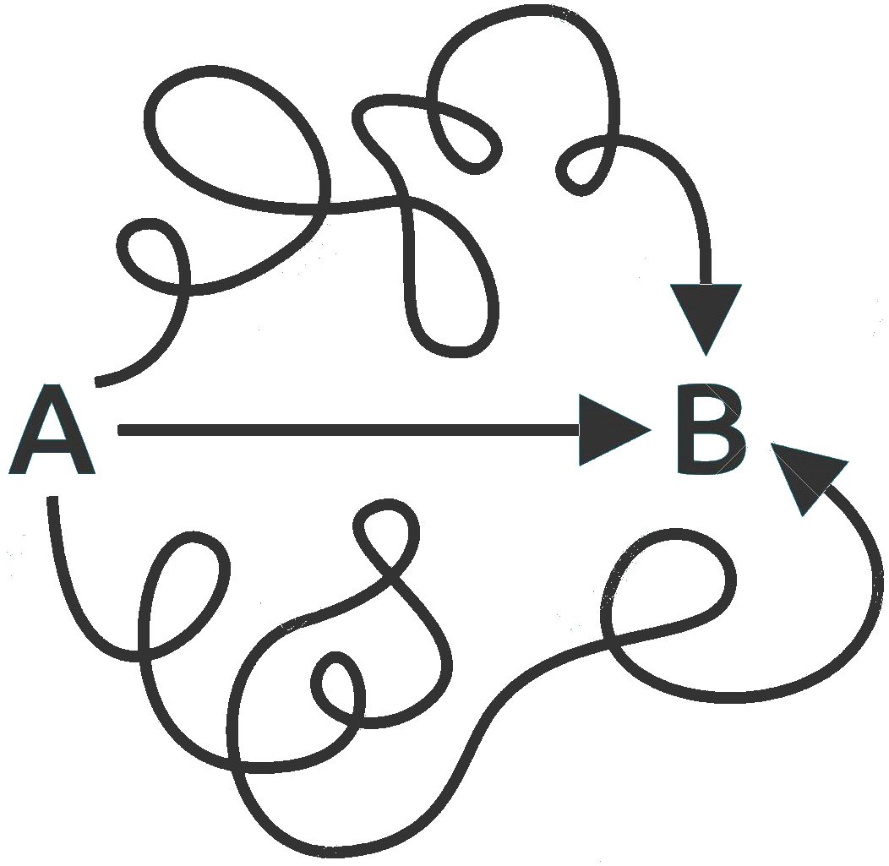

Write readable programs for people, not just for computers.
Code should be written in that way, that every other developer should read it without problems. This
means that each variable, function, class name should clearly indicate what it is for.

Leave your code better than you found it.
Keeping code clean is a constant challenge. Instead of making a bigger and bigger mess into the
code, every commit should put it in order.

Test your code.
Software testing is really important to point out the defects and errors that were made during the
development phases. It also improves the quality of the product and project by discovering bugs at
early stage in the application.

Keep it simple.
Functions should be focused on a single concern and do precisely one task. If you have a choice
between clean code that is not often used or a slight performance increase, always choose clean
code.